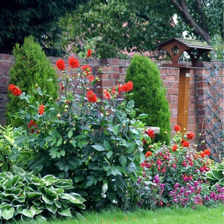

An old greenhouse Purple wildflowers  A birdfeeder The garden shop Spring daffodils Iris along the path Butterfly The garden blueprint The patio Crocus close-up Bumble bee collecting nectar Winding garden path